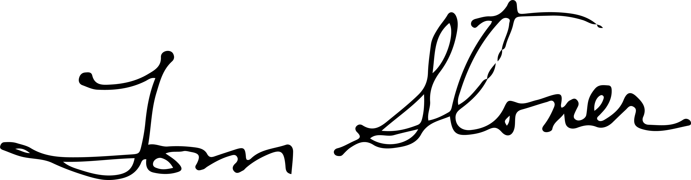

Filmed for the 25th anniversary.
In a small London garden, an idea dawned.
It's been roughly thirty years since Kitty and I found our way into the London garden that awakened us to the profound power of urban green spaces — and a decades-long pursuit that we are still on. Both of us had held a life-long appreciation of nature, but this was different.
While we both love London, at that point, we had been there for several days. And we were beginning to feel buffeted by the pace; the noise. We were walking through a bustling neighborhood when we unexpectedly encountered a portal into a park. We entered and were immediately struck by the sense of tranquility; the immediate transition from urban fray to verdant calm. Lining the walkway through the garden were multiple benches, many inscribed with the captured reflections of men and women who had sought refuge in this very place during the darkest days of World War II. What we saw, felt, read; it changed us.
Though that particular war had long since passed, the need, both thirty years ago as well as today, is as strong as it was in 1940s London.
What we experienced that day in the garden ignited something in me. Soon after Kitty and I returned to the US, we began laying plans for a nonprofit that would see the creation of small urban green spaces, what some call pocket parks, concentrating our efforts in communities where the need was particularly urgent.
In the years since the TKF Foundation was formed, and we planted our first Sacred Place, our understanding of the influential role nature plays on our physical and mental health — our wellbeing — has only deepened. This is partly due to the exponential growth in the body of research, including brain science, exploring and illuminating the nature-health connection. For us at TKF — now Nature Sacred — though, just as telling as the research is the trove of journal entries we have collected from the small yellow notebooks we tuck beneath the Nature Sacred benches found in every Sacred Place we have helped create. After two plus decades of listening, learning and doing, we are more convinced than ever that nature is nothing less than essential to individual — to societal — health.
As a society, I believe the argument can be made that we are writ large suffering from the symptoms of PTSD, though the causes may be various. The evidence is all around us: rising rates of depression, escalating numbers of mass shootings, growing community fragmentation and isolation. While the solutions are undoubtedly complex, I believe — and science has shown — that nature can help us heal. And the work we are doing as an organization, to help see that every community across the US has access to a meaningful green space, is more important than ever.

2022